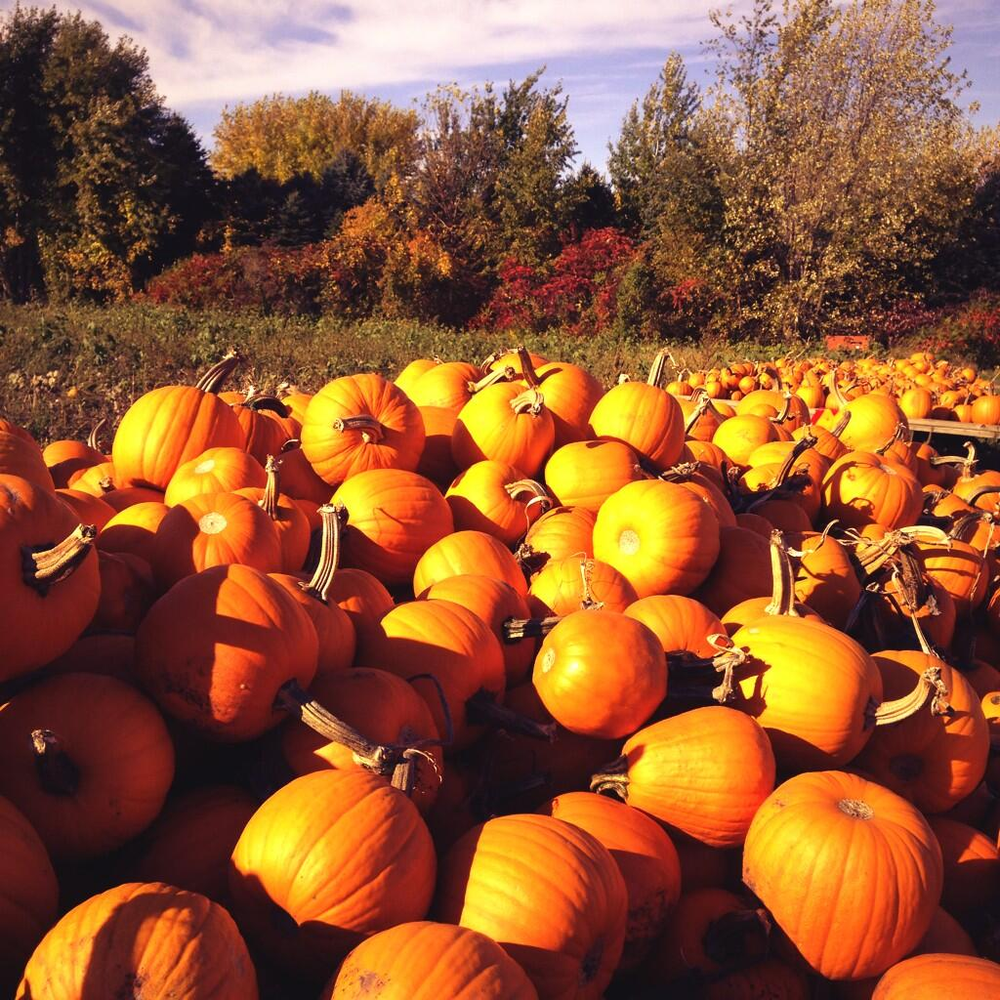

What can I do in the fall in Montana?
Fall is the time of year when the summer heat starts to linger away and the cold Montana breeze starts to roll in. Montana's most popular sport starts around this time. As the cold rolls in, so does hunting season. Montana houses over 100,000 elk hunters per year, including in state and out of state residents. Montana is also known for amazing mule deer, antelope, big horn sheep, and waterfowl hunting. Hunting is not the only thing that is popular in the fall. Mountain biking and rock climbing are very popular. Many people enjoy getting outside in the cooler weather to enjoy these strenuous activities. Rock climbing is also very popular indoors this time of year, for those who don't like the chilly temperatures. Mountain biking is popular, even at local ski hills. As the ski resorts are still dry from the summer, they still operate lifts and allow downhill mountain biking. Another thing that is difficult but very rewarding is picking huckleberries. When picking huckleberries you need to hike to elevations over 4500 feet, which may sound simple, but proves to be very difficult in the national forests. Another thing that is fun for young kids, is a corn maze. This seasonal activity is special for the kids and can even be exciting for the adults. There are tons of corn mazes across the state around this time of year, so get out and explore.
Come visit Montana in the fall to experience some cool temperatures and fun activities